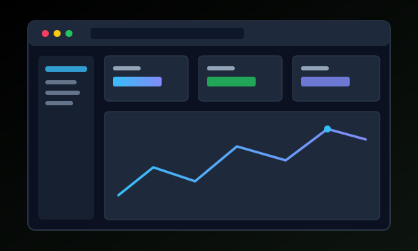

Sistema de Gestión de Soporte y Equipos
Aplicación web para registrar órdenes de servicio, seguimiento de mantenimientos preventivos y correctivos a equipos de cómputo, diagnóstico de fallas y control de clientes particulares y cooperativas.
HTML5
CSS Grid
JavaScript ES6
PHP
Soporte Técnico